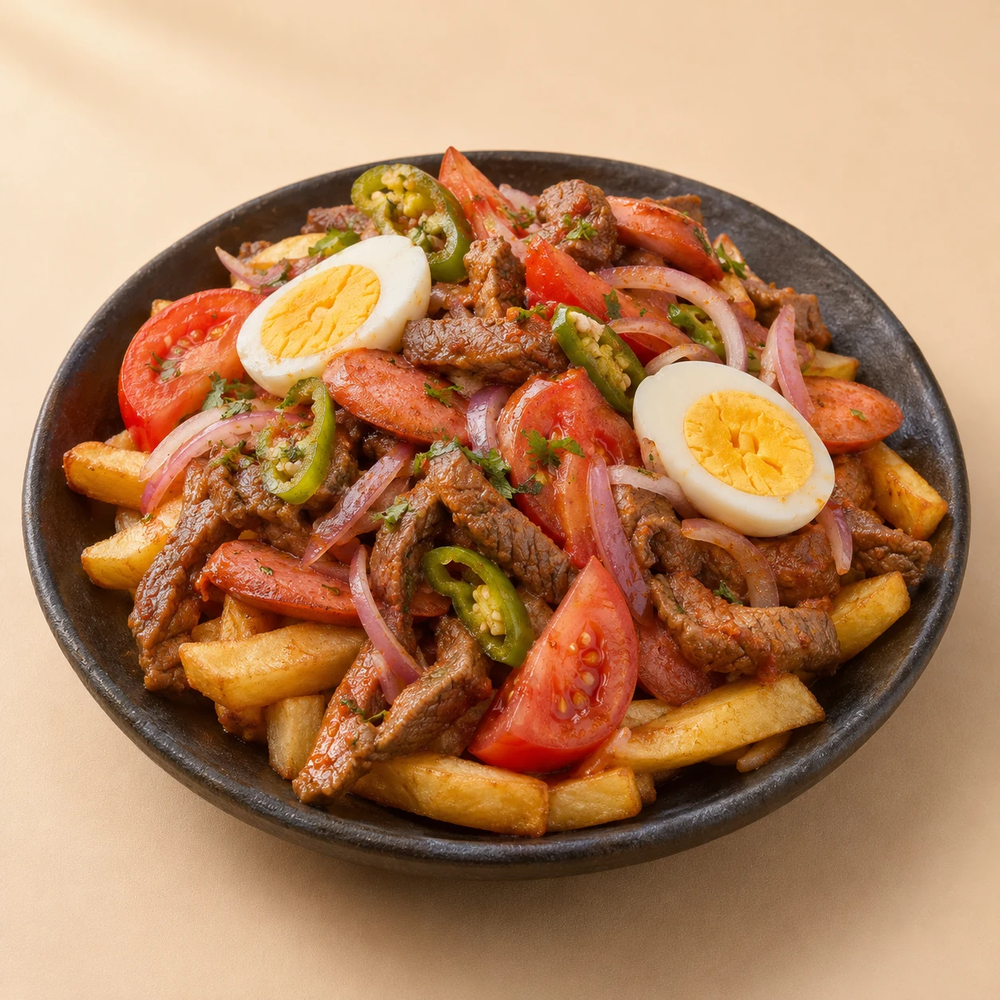

Haz que se sienta tuyo.
Cambia el contenido y abre la web para ver el resultado.
TU RESTAURANTE, A TU MANERA
BIENVENIDO A SENSACIÓN
Actualiza la carta, cambia una fotografía o prepara las mesas de hoy desde un mismo lugar.

Descarga la configuración o recupérala en otro navegador.
Gestión protegida de solicitudes del servidor ↗Cambia el contenido y abre la web para ver el resultado.
Solicitudes enviadas desde la web. Cambia su estado después de comprobar disponibilidad. No se envían avisos automáticos.
Personas que han solicitado mesa: nombre, teléfono e historial de solicitudes.